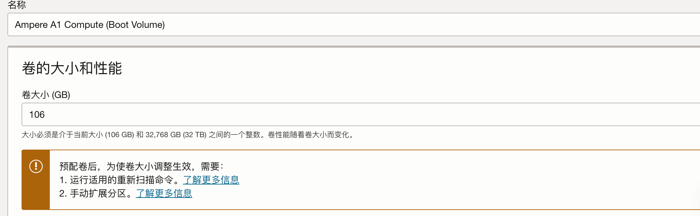
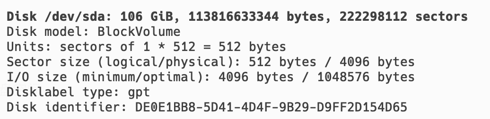

甲骨文云主机免费服务提供总计 200 G 的引导卷。默认创建主机时选择的是 47G。现在有一台 47G 的主机，希望对它进行扩容使用剩余的免费容量。
首先进入引导卷的设置页面，修改目标主机的引导卷大小

修改完成之后保存。
步骤
跟随提示中的指引信息，首先扫描磁盘空间
扫描磁盘空间
先查看当前磁盘设备
fdisk -l这里要调整的是 /dev/sda

根据文档，使用如下命令扫描磁盘，替换 <device_name> 为 sda，请根据个人情况进行修改。
sudo dd iflag=direct if=/dev/<device_name> of=/dev/null count=1
echo "1" | sudo tee /sys/class/block/<device_name>/device/rescan成功的话输出如下
1+0 records in
1+0 records out
512 bytes copied, 0.000515919 s, 992 kB/s
1重新分区
下一步需要对磁盘重新进行分区，在完成扫描后使用 lsblk 查看当前分区大小会发现并没有变化，仍为 47G。
lsblk
NAME MAJ:MIN RM SIZE RO TYPE MOUNTPOINTS
loop0 7:0 0 49.1M 1 loop /snap/core18/2788
loop1 7:1 0 26.8M 1 loop /snap/oracle-cloud-agent/59
loop2 7:2 0 46.4M 1 loop /snap/snapd/19459
loop3 7:3 0 49.1M 1 loop /snap/core18/2794
loop4 7:4 0 26M 1 loop /snap/oracle-cloud-agent/64
loop5 7:5 0 35.5M 1 loop /snap/snapd/19998
sda 8:0 0 106G 0 disk
├─sda1 8:1 0 46.5G 0 part /
└─sda15 8:15 0 99M 0 part /boot/efi使用 fdisk 工具对 /dev/sda 重新分区
sudo fdisk /dev/sda此时可能会出现告警信息，GPT PMBR size mismatch (97677311 != 222298111) will be corrected by write，这表示磁盘有连续的剩余空间，但是分区并未使用。
首先查看当前分区
Command (m for help): p
Disk /dev/sda: 106 GiB, 113816633344 bytes, 222298112 sectors
Disk model: BlockVolume
Units: sectors of 1 * 512 = 512 bytes
Sector size (logical/physical): 512 bytes / 4096 bytes
I/O size (minimum/optimal): 4096 bytes / 1048576 bytes
Disklabel type: gpt
Disk identifier: DE0E1BB8-5D41-4D4F-9B29-D9FF2D154D65
Device Start End Sectors Size Type
/dev/sda1 206848 97677278 97470431 46.5G Linux filesystem
/dev/sda15 2048 204800 202753 99M EFI System这里要先删除 /dev/sda1 对应对分区，先查看分区信息
Command (m for help): i
Partition number (1,15, default 15): 1
Device: /dev/sda1
Start: 206848
End: 97677278
Sectors: 97470431
Size: 46.5G
Type: Linux filesystem
Type-UUID: 0FC63DAF-8483-4772-8E79-3D69D8477DE4
UUID: E5E894D8-90B3-48F4-A059-C494218DC0D8删除该分区
Command (m for help): d
Partition number (1,15, default 15): 1
Partition 1 has been deleted.再重新创建分区，注意无需删除 ext4 标记
Command (m for help): n
Partition number (1-14,16-128, default 1):
First sector (34-222298078, default 206848):
Last sector, +/-sectors or +/-size{K,M,G,T,P} (206848-222298078, default 222298078):
Created a new partition 1 of type 'Linux filesystem' and of size 105.9 GiB.
Partition #1 contains a ext4 signature.
Do you want to remove the signature? [Y]es/[N]o: n之后输入 wq 对修改进行保存。完成后重启机器即可，再次查看磁盘分区情况，修改已经生效。
lsblk
NAME MAJ:MIN RM SIZE RO TYPE MOUNTPOINTS
loop0 7:0 0 49.1M 1 loop /snap/core18/2788
loop1 7:1 0 49.1M 1 loop /snap/core18/2794
loop2 7:2 0 26.8M 1 loop /snap/oracle-cloud-agent/59
loop3 7:3 0 26M 1 loop /snap/oracle-cloud-agent/64
loop4 7:4 0 46.4M 1 loop /snap/snapd/19459
loop5 7:5 0 35.5M 1 loop /snap/snapd/19998
sda 8:0 0 106G 0 disk
├─sda1 8:1 0 105.9G 0 part /
└─sda15 8:15 0 99M 0 part /boot/ef参考
- rescanningdisk.htm 『重新扫描云主机的磁盘空间』